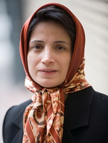

پذيرش > اخبار > همسر نسرین ستوده: برای بچه ها بود و نبود ملاقات کابینی علی السویه است و بعد از ملاقات (...)


 همسر نسرین ستوده: برای بچه ها بود و نبود ملاقات کابینی علی السویه است و بعد از ملاقات حس خوبی ندارند همسر نسرین ستوده: برای بچه ها بود و نبود ملاقات کابینی علی السویه است و بعد از ملاقات حس خوبی ندارند
11 شهریور 1390 - - نسخه قابل چاپ
کلمه: در حالیکه نسرین ستوده در سومین هفته متوالی از ملاقات با خانواده اش خودداری کرده و خواستار دلجویی از خانواده اش شده بود در اقدامی جدید مسئولان زندان به خواهر نسرین ستوده، اعلام کردند که حق ملاقات با خواهر زندانی اش را ندارد.
رضا خندان همسر نسرین ستوده در این خصوص به جرس می گوید: “این سومین هفته است که برای ملاقات خانم ستوده می رویم اما ایشان در اعتراض به برخورد غیرقانونی و بازداشت سه هفته پیش اعضای خانواده اش به سالن ملاقات نیامد. خانم ستوده خیلی مشخص گفته اند که مسئولین قوه قضاییه، دادسرا، دادستانی و هرکسی که مسئول این برخوردها با خانواده اش است باید از خانواده اش دلجویی کنند و دیگر چنین شرایطی صورت نگیرد تا شاید آسیبی که که در آن ملاقات به بچه هایش وارد شده جبران شود. به همبندی هایش هم گفته هفته بعد هم اگر شرایط مناسب برای ملاقات فراهم نگردد به سالن ملاقات نخواهد آمد. سرپرست دادسرای اوین نامه داده که خواهر خانم ستوده حق ملاقات با ایشان را ندارد و ممنوع الملاقات است و علتی هم ذکر نکرده اند. این اتفاق بسیار عجیب است زیرا ما انتظار رسیدگی و دلجویی داشتیم اما محدودیت ها و فشارهای غیرقانونی روز به روز در حال “افزایش” است.”
نسرین ستوده بدنبال بازداشت همسر و ضرب و شتم خواهرش در نامهای به رییس قوه قضاییه و سرپرست دادسرای اوین، اعلام کرده بود چون خوفناکترین دادسرای ایران به طورغیر قانونی هفته گذشته خانوادهاش را به اتفاق دو کودک خردسالش ساعاتی به گروگان گرفته است از این پس ترجیح می دهد برای آسیب نرسیدن به فرزندانش از انجام چنین ملاقاتی خودداری کند.
همسر ستوده با بیان اینکه تمام جنجالها یی که در آن روز ملاقات به پا کردند همه بر سر هیچ بوده است، ادامه می دهد: “سه هفته پیش زمانیکه در سالن ملاقات بودیم یک دفترچه ای در دست من بود تا چیزهایی که می خواهم به نسرین بگویم یادم نرود و آنها را یاداشت کرده بودم و همینطور چیزهایی که خانم ستوده احتیاج دارد را یاداشت کنم که ناگهان یکی از مسئولین امنیتی زندان با یک برخورد بد و توهین آمیزی دستش را از بین من و بچه ها دراز کرد تا دفترچه را بگیرد. این حرکت بسیار ناراحت کننده و غیرقابل قبول بود و من اجازه ندادم دفترچه ام را بگیرند و به این برخورد اعتراض کردم. زیرا اساسا من و خانم ستوده که کار مخفیانه نداریم. بعد هم گفتند همه باید بازرسی شویم و حتی کیف خواهر ستوده را هم می خواستند بگردند. خواهر همسرم پزشک تغذیه و عضو هیت علمی دانشگاه و فردی کاملا غیر سیاسی و اینگونه برخوردها واقعا ناراحت کننده بود و اجازه بازرسی ندادیم. حرف ما هم این بود که بازرسی باید به شکل قانونی صورت گیرد و باید از طرف دادسرا یا قوه قضاییه نامه ارائه دهند. اگر قرار باشد که خانواده ها را در سالن ملاقات بازرسی کنند از قبل اعلام کنند تا ما هم در مقابل این برخوردها تصمیم بگیریم که بچه های کوچک را در این شرایط به سالن ملاقات ببریم یا نه؟ همین درخواست مجوز از قوه قضاییه باعث شد که ما را دو و سه ساعت در سالن ملاقات نگه دارند بعد هم نیم ساعت در یک راهرو تاریکی که به حیاط زندان منتهی می شد نگه داشتند و تا ساعت پنج بعد از ظهر ما را نگه داشتند و در این مدت هم برخوردهایشان همراه با تنش بود. این در حالی است که از صبح تا ظهر ما را معطل کرده بودند تا به سالن ملاقات برویم و تمام این برخوردها در مقابل چشمان بچه های کوچک ما صورت گرفت. حتی مهرابه در سالن ملاقات بعد از این برخوردها جلوی چشم مادرش شروع به گریه کرد.”
او می افزاید: “هم بندی های خانم ستوده می گفتند گریه مهراوه مدام جلوی چشم خانم ستوده می آید و بسیار برای بچه هایش ناراحت است. همسرم همان لحظه ی اول که متوجه بازداشت ما شد دست به اعتصاب غذا زد و ساعت پنج که فهمید ما را آزاد کرده اند اعتصاب خود را شکست. خلاصه بعد ما را به شکل غیر قانونی به دادسرا منتقل کردند این در حالی است که حکم احضاریه نداشتیم و ما را به زور به دادسرا بردند تا نهایتا به درخواست ما سرپرست دادسرای اوین نامه ای برای بازرسی ما تنظیم کرد و ما را بازرسی کردند. نکته ی قابل توجه اینکه بعد از بازرسی هیچ چیزی پیدا نکردند و به عبارتی تمام این جنجالها و برخوردها برای هیچ بود. در این میان همسر خواهر خانم ستوده بیرون از زندان منتظر ما بود و ما از آنها خواستیم تا به او تلفن بزنیم که نگران نباشد اما تلفن در اختیار ما نگذاشتند. بعد که خواهر همسرم با موبایل خواست به همسرش تلفن بزند یکی از مامورین زن به طرف او هجوم برد تا موبایل را بگیرد و به صورتش چنگ انداخت که هنوز جای ناخنهایش روی صورت خواهر خانمم است. باز تکرار می کنم تمام این اتفاقات جلوی چشمان فرزندان کوچکم رخ داد که تاثیرات و آسیبهای غیر قابل جبرانی را بر روی آنها خواهد گذاشت و حتی تا ساعت پنج ناهار به بچه ها ندادند و من به سربازی پول دادم تا بیسکویت برای آنها بخرد، این در حالی است که اگر بچه ها در بازداشت بودند باید غذا در اختیار آنها می گذاشتند.
رضا خندان با ابراز ناراحتی از شرایط ملاقات کابینی بیان می کند: “برای بچه ها ملاقات کابینی بود و نبودش در واقع علی السویه است و اصلا جالب نیست و بعد از ملاقات اصلا حس خوبی ندارند. حتی وقتی از پسرم می پرسم می خواهی برویم ملاقات مادر می گوید ملاقات تلفنی است؟ بعد که می گویم بله، تمایلی برای آمدن ندارد و با ناراحتی می گوید نمی آیم. خواسته ی اصلی ما از زمان بازداشت همسرم همواره این بوده که حداقل هفته ای یک بار اجازه ی ملاقات حضوری بدهند تا بچه ها از نزدیک در شرایط بهتر و آرامی از دیدن مادرشان استفاده کنند و اینقدر دچار آسیبهای روحی و آزردگی نشوند. متاسفانه هیچ گاه این اتفاق نیفتاد و هفته ها طول می کشید تا به ما بگویند ملاقات حضوری است و چند بار هم ماموران بچه ها را تنها می بردند که خیلی شرایط آزاردهنده ای بود. این در حالی است که طبق عرفی که خودشان گذاشته اند ما درخواست می دهیم و ماهی یکبار می توانیم ملاقات حضوری داشته باشیم. اولین ملاقات حضوری که برای اولین بار به من و بچه هایم دادند ده ماه بعد از بازداشت همسرم بود و در این ده ماه حتی دادستانی به بچه ها هم نامه جهت ملاقات حضوری نداد. بعد از یک سال هنوز برادرش نتوانسته از دادستانی نامه بگیرد تا خواهرش را ببیند و در این یک سال فقط یکبار به مادرش که بیمار است، نامه دادند تا دخترش را ببیند.”
همسر این حقوقدان دربند با اشاره به رفتار دوگانه دستگاه قضاییه کشور می گوید: “تمام خواسته ی ما این است که نظم و قاعده ای تعریف کنند و خودشان به آن عمل کنند و این نظم را در مورد همه زندانیان یکسان اجرا کنند و به دلخواه نباشد که بخواهند از این قاعده به عنوان امتیاز استفاده کنند و زندانیان را تحت فشار قرار دهند. انتظار ما این است که قوه قضاییه اگر تلاش می کند شرایط زندانیان سیاسی عادی شود، دوگانه رفتار کردن را کنار بگذارد. اگر قرار است شرایط زندانیان سهل شود باید برای همه زندانیان یکسان باشد و تمایزی بین آنها قائل نشوند. اینطور نباشد که عده ای را آزاد کنند و عده ای را مثل همسر خانم مهدیه گلرو در روز سالگرد ازدواجشان بازداشت و زندانی کنند و یا با خانواده و بچه های کوچک خانم ستوده را اینگونه برخورد کنند.. البته خواسته ما این است که تمام زندانیان که به ناحق در زندان هستند حتی یک دقیقه از حکمشان باقی مانده آزاد شوند اما دوگانه رفتار کردن به هیچ وجه قابل قبول و خوب نیست. کما اینکه خیلی از زندانیان سیاسی حق استفاده از مرخصی درمانی را هم ندارند و همسر من حتی برای فوت پدرش نتوانست برای نیم ساعت به مراسم خاک سپاری پدرش بیاید.”
نسرین ستوده به جرم اقدام علیه امنیت ملی و تبلیغ علیه نظام از سوی شعبه ۲۶ دادگاه انقلاب به قضاوت پیرعباسی به ۱۱ سال حبس تعزیری، ۲۰ سال ممنوعیت خروج از کشور و ۲۰ سال محرومیت از وکالت محکوم شد. این حقوقدان، وکیل دادگستری و برنده جایزه حقوق بشر “سازمان حقوق بشر بینالملل”، ضمن عضویت در کانون مدافعان حقوق بشر، کمپین یک میلیون امضا برای تغییر قوانین تبعیض آمیز علیه زنان، و انجمن حمایت از کودکان، وکالت پروندههای بسیاری از فعالان حقوق بشر، فعالان حقوق زنان، کودکان قربانیِ کودک آزاری و کودکان در معرض اعدام را برعهده داشتهاست. ستوده در سال ۱۳۸۸ برنده جایزه حقوق بشر “سازمان حقوق بشر بینالملل” شد. او پیش از بازداشت، بارها بهخاطر فعالیتهای حقوقیاش مورد تهدید قرار گرفته بود و به وی هشدار داده بودند که از وکالت شیرین عبادی دست بردارد.
همسر نسرین ستوده در پایان در خصوص پرونده ی موکلان خانم ستوده می گوید: “بسیاری از پرونده ها که مربوط به حقوق بشر بوده، همکارانش بر عهده گرفته اند اما بسیاری از پرونده ها که غیر سیاسی بوده و برای گذران زندگی قرارداد مالی با موکلان خود بسته است همینطور مانده و مشکلاتی را برایش ایجاد کرده است. زیرا قبل از بازداشت فرصت هماهنگی به او ندادند و فکر هم نمی کرد بازداشتش اینقدر طول بکشد. الان هم امکان ملاقات با موکلان و یا دسترسی به تلفن جهت پیگیری ندارد و از یکسال پیش که ایشان را بازداشت کرده اند مثل این است که وارد یک چاهی شده که هیچ راهی برای ارتباط با همکاران و وکلایش ندارد. در این مدت فقط یکبار با وکلایش ملاقات داشته است! این در حالی است که ایشان حق تلفن و ملاقات باید داشته باشند و حق مرخصی برای رسیدگی به پرونده ی موکلان خود باید داشته باشد اما متاسفانه ایشان به عنوان وکیل از همه این حقوق “محروم” است و روز به روز هم شرایط و محدودیتها برای ایشان بیشتر می شود.”
ارسال به
بالاترین
،
توییتر
،
فریندفید
،
فیسبوک
در همين بخش :
 پروین ذبیحی برنده جایزه حقوق بشری سازمان غيردولتى اتريشى سودويند شد پروین ذبیحی برنده جایزه حقوق بشری سازمان غيردولتى اتريشى سودويند شد
پخش کارت پستال و بروشور در روز جهانی زن در تهران
تمدید زمان برای امضای بیانیهی جمعی از فعالان زن به مناسبت هشت مارس
مجوزی که در نطفه خفه شد
بیش از 2000 امضا در اعتراض به تبعیض های آموزشی به مجلس تحویل داده شد
ديگر بخش ها :
طرح یک میلیون امضا
|
مقالات
|
سایت نوشته ها
|
اخبار
|
گزارش كمپين
|
گفت و گو
|
علیه سکوت
|
كوچه به كوچه
|
نامه های شما
|
گزارش ویژه
|
گفتگو با اعضا
|
ویژه سالگرد کمپین
|
تصویر برابری
|
دل آرام علی
|
تریبون
|
مقالات
|
تاریخ شفاهی
|
خارج از چارچوب
|
کتابخانه
|
درباره کمپین
|
کمپین در شهرها
|
کمپین در بند
|
صدای تغییر
|
ویژه 22 خرداد
|
لایحه حمایت از خانواده
|
گالری
|
عشا مومنی
|
امیر یعقوبعلی
|
خدیجه مقدم
|
راحله عسگری زاده و نسیم خسروی
|
پروین اردلان،جلوه جواهری، مریم حسین خواه، ناهید کشاورز
|
زینب پیغمبرزاده
|
سعیده امین، سارا ایمانیان، محبوبه حسین زاده، ناهید کشاورز و همایون نامی
|
احترام شادفر
|
نسیم سرابندی زاده،فاطمه دهدشتی
|
وبلاگ مهمان
|
پرونده خرم آباد
|
دستگیری ها
|
مریم مالک
|
پرستو اللهیاری
|
مهرنوش اعتمادی
|
سمیه رشیدی
|
Other Languages
|
همراهان
|
«فراخوان کمپین ده روز با بهاره هدایت»
| English
|